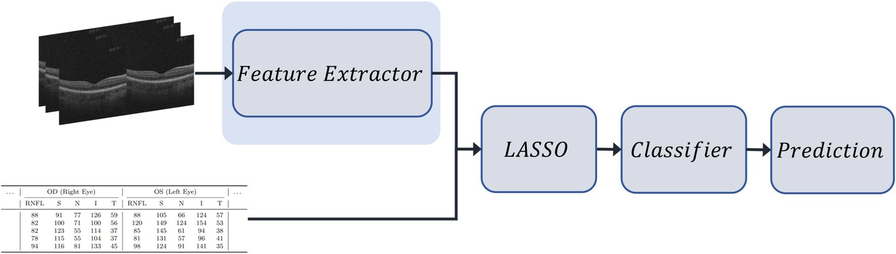
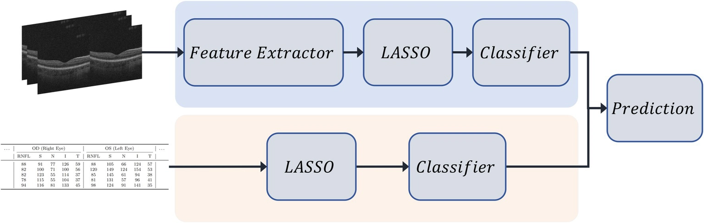
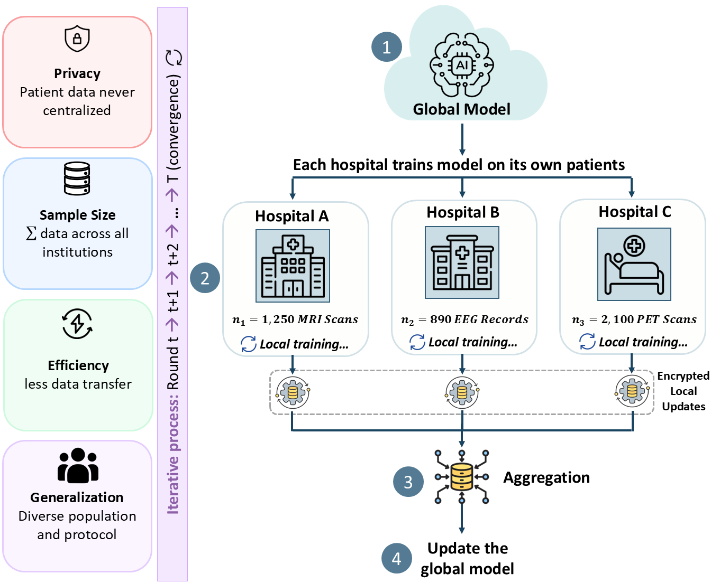
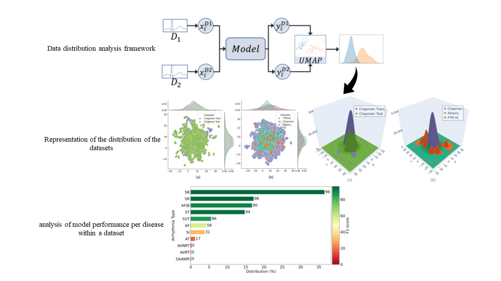
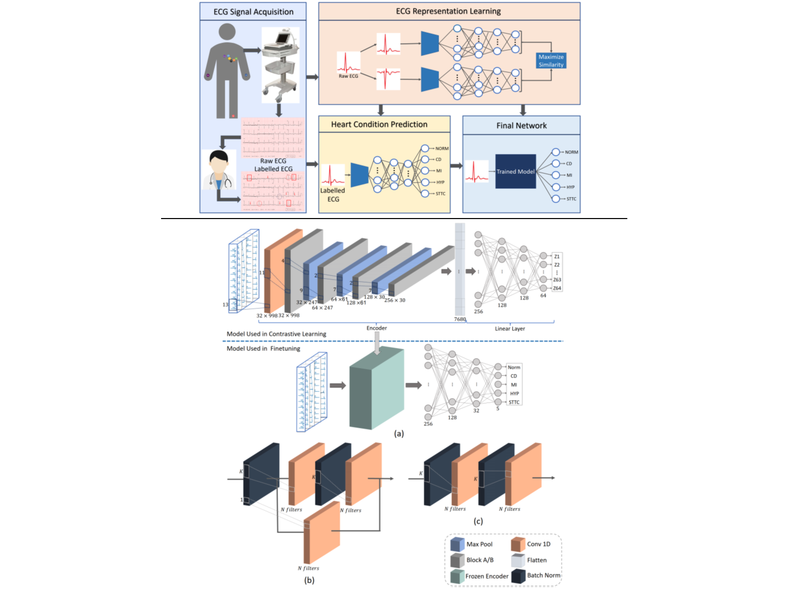

Selected Publications


Chaojun Chen, Sahar Soltanieh, Sajith Rajapaksa, Farzad Khalvati, E. Ann Yeh
Frontiers in Neurology, 2026

Federated Learning in Neurology: Bridging Data Privacy and Artificial Intelligence for Brain Health
Sahar Soltanieh, Farzad Khalvati, E. Ann Yeh
Seminars in Neurology, 2025

Sahar Soltanieh, Javad Hashemi, Ali Etemad
IEEE Journal of Biomedical and Health Informatics, 2024

Analysis of augmentations for contrastive ECG representation learning
Sahar Soltanieh, Ali Etemad, Javad Hashemi
International Joint Conference on Neural Networks (IJCNN), 2022